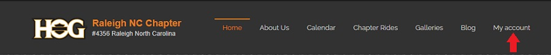
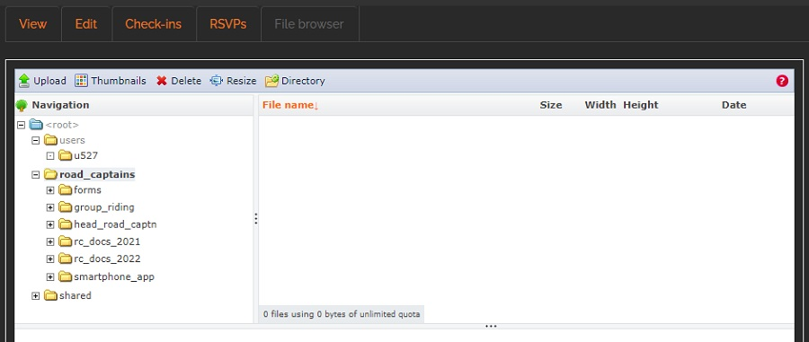
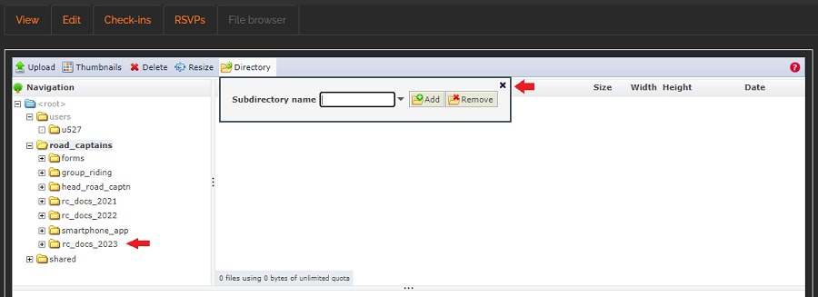

Create a New Subdirectory
Steps in this section only need to be done at the start of the calendar year
Once the subdirectory for the current year has been created, files will be added by following the steps in the Upload a Document section.
- Login to your account on raleighhog.com
- Referencing the image below, click the My account link in the navbar. 
- Referencing the image below, on your account page, click the File browser tab.

- The following window opens. This shows all the directories the Road Captains have access to. Road Captains will only use the road_captains directory for this tutorial.

- Click the road_captains directory highlighted in the above image to expand it and show the subdirectories it contains. Reference the image below
- If the current calendar year subdirectory for rc_docs_202x does not show, use the following steps to create the subdirectory. Otherwise, go to the Upload a Document section to continue.
- This tutorial assumes that a subdirectory for rc_docs_2023 needs to be added. The steps following show how to add it. Follow these steps to create the yearly subdirectory for your current situation.
- Ensure that the road_captains directory is highlighted. Click it to ensure it is.
- Referencing the image below, in the toolbar, click Directory and there will be a dropdown.

- Referencing the image below, fill in the name for the new subdirectory (rc_docs_2024 for this tutorial) then click the Add button.

- Referencing the image below, the new subdirectory shows in the list. Click the x in the upper right corner of the dropdown to close it. 
- Follow the steps starting with step 4.2 in the next section, Upload a Document, to populate the new subdirectory